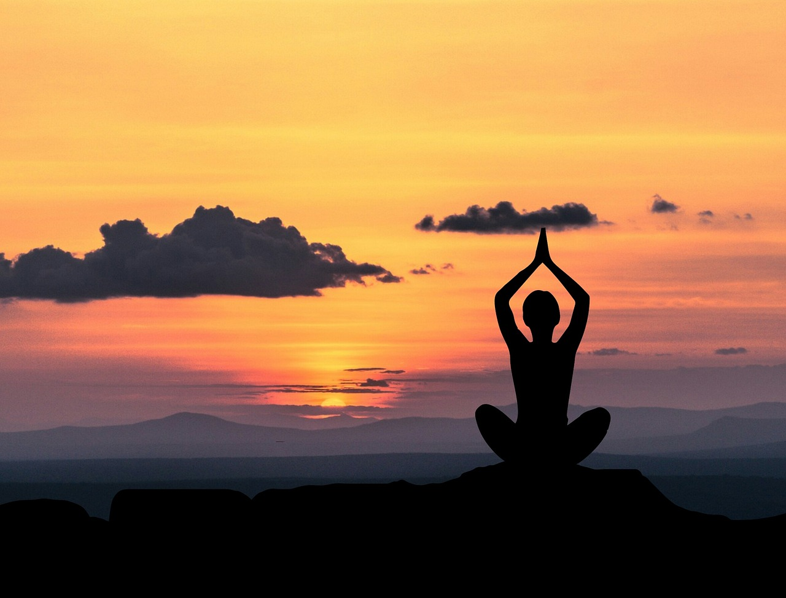

Iedere vrijdagmorgen ga ik naar yogales. Ik doe aan Yin yoga,Yin yoga is een langzame, rustgevende vorm van yoga. Bij yin yoga worden de lichaamshoudingen - asana's - voor een langere tijd vastgehouden. Zo'n drie tot vijf minuten. Deze houdingen zijn gericht op het versterken en versoepelen van je bindweefsel en je gewrichten. Doordat je lang in één positie zit, wordt het bindweefsel langzaam gerekt. In het begin kan dit ongemakkelijk aanvoelen, maar naarmate je vaker yin yoga beoefent zal je merken dat het makkelijker gaat. Tijdens de oefeningen is het belangrijk om je te concentreren op je ademhaling en de spierspanning los te laten.

Ik vind het leuk om te reizen en nieuwe dingen te ontdekken. Ik probeer ieder jaar een tripje te maken naar een andere stad in Europa. Dit jaar ben ik naar Brussel geweest en in 2023 naar Barcelona. Voor volgend jaar staat Rome op de lijst. Naast het reizen ben ik ook gek op eten en vind het altijd leuk om nieuwe smaken te ontdekken.
Ik ben gek op gezelschapsspelletjes spelen met de kids. Het maakt me niet uit of het nu monopoly is of vier op een rij. Altijd gezellig met een drankje en lekkere versnaperingen.
Ook mag ik graag shoppen. Het maakt me niet uit of ik het alleen doe of met de meiden. Omdat ik niet vaak shop trek ik er wel een hele dag voor uit als ik het wel doe. Ook als ik ga shoppen probeer ik altijd naar een leuke stad te gaan. Vorige week heb ik in Groningen geshopt maar ik mag ook graag naar Zwolle, Deventer, Rotterdam of Amsterdam.